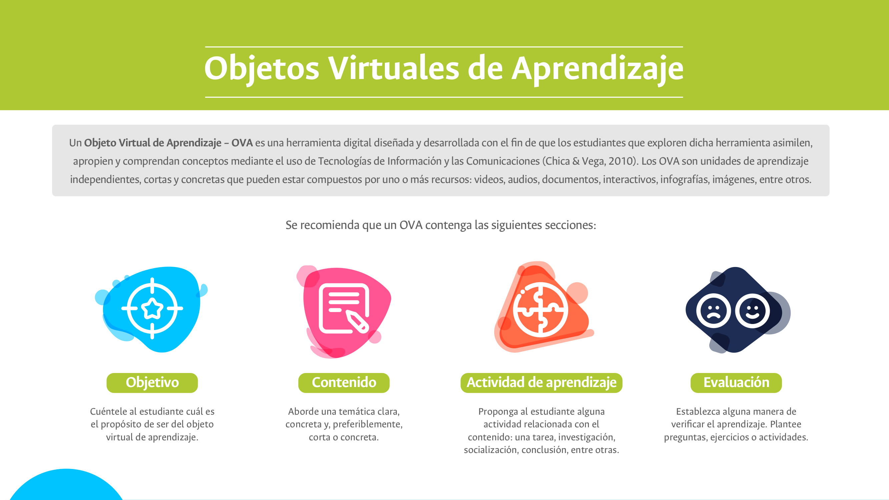
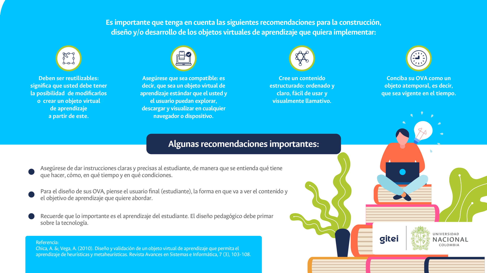

Planificación de clases remotas en la UNAL (periodo 2020-02)
Objetos Virtuales de Aprendizaje
¿Qué son?

Algunas sugerencias

Algunos ejemplos construidos en la UN
La Universidad Nacional de Colombia ha promovido la creación de Objetos Virtuales de Aprendizaje a través de convocatorias de innovación académica en años anteriores. En esta página puede encontrar los enlaces a varios de los productos concretos obtenidos como resultados de esas convocatorias (no todos los productos son, en sentido estricto, OVA).
Una pequeña selección de ejemplos, puestos aquí solo a título ilustrativo, es la siguiente (varios de ellos requieren activar Flash en su computador):
- Del curso Bioquímica: De las macromoléculas a los átomos.
- Del curso Bioquímica: Vitaminas.
- Del curso Anticoncepción basada en evidencias: Métodos de anticoncepción.
- Del curso Estadística fundamental: Estadística descriptiva.
- Del curso Laboratorio de principios de bioquímica: Cuantificación de ácido ascórbico.
Obra publicada con Licencia Creative Commons Reconocimiento Compartir igual 4.0